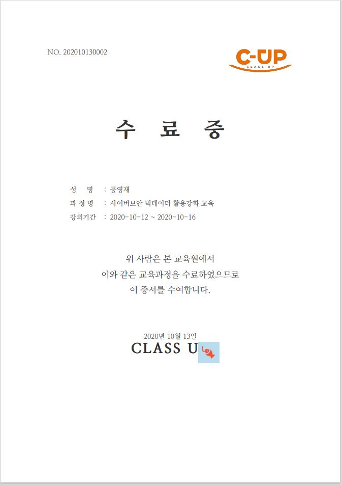
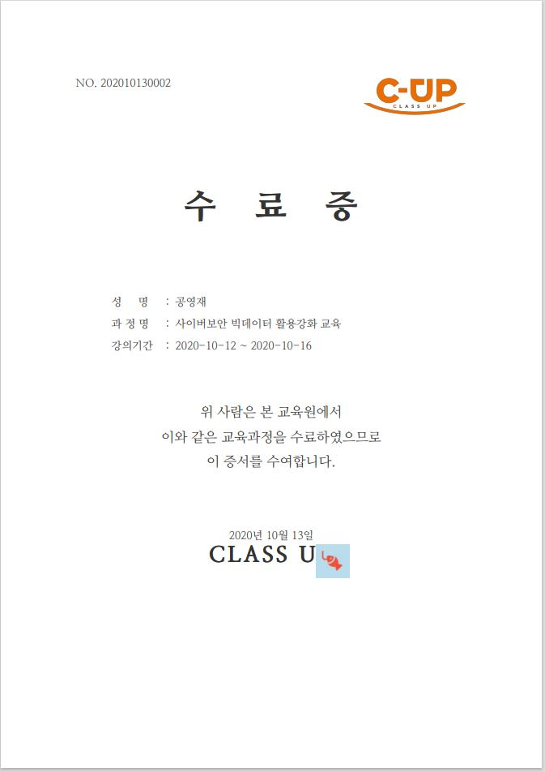

I am Programmer

1995년 10월 07일 (만25세)
Email : hunter95001@naver.com
[ 경험보다 훌륭한 스승은 없다 ]
12세 때 Diablo에서 처음 본 이 말은 지금까지 제 좌우명입니다. 어렸을 때부터 다양하고 새로운 경험은 다른 사람과 협력하는 방법과 공감, 임기응변 능력 및 새로운 생활에 적응하는 법을 가르쳐 주었습니다. 이러한 경험들과 함께 어린 시절부터 사이버 수사관의 꿈을 간직하며 컴퓨터 공학과에 진학하게 되어 2020년 신라대학교 컴퓨터 공학과를 졸업했습니다.
운영체제나, 네트워크, 데이터베이스 등 교과목을 이수했고, 정보처리기사나, SSTF, 온라인 사이버 보안 교육을 찾아다니며 수강하고, 페이스북이나 오픈채팅방을 이용해서 새로운 뉴스나 기사를 보고 기록하기 시작했습니다. 컴퓨터 공학과의 기초 지식과 정보처리기사, 디지털 포렌식 전문가 2급 자격증을 준비하면서 기초 지식을 쌓아왔습니다.
학력 및 경력
2014.02 성도고등학교 졸업
2020.02 신라대학교 컴퓨터공학과 졸업
2019.01~2019.02 [일본] Stair Technology 인턴
2020.08~2020.12 [행정안전부] 공공 빅데이터 인턴

 
